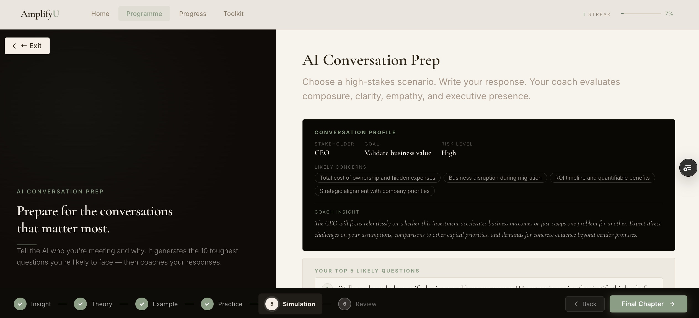
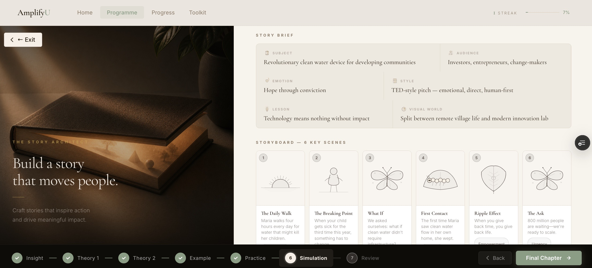
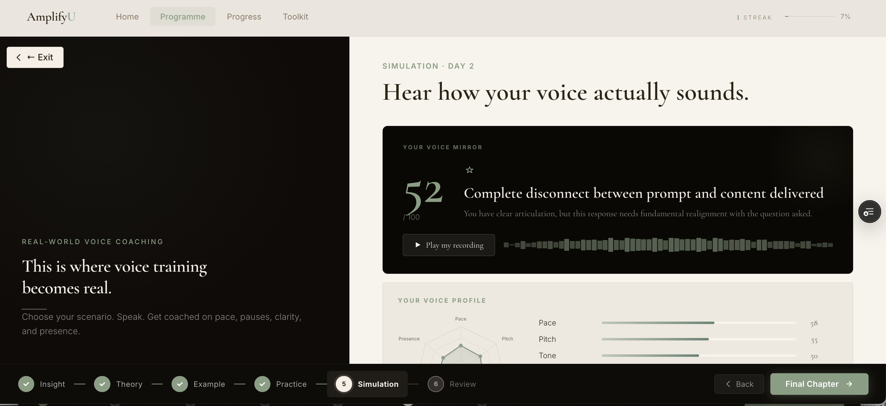
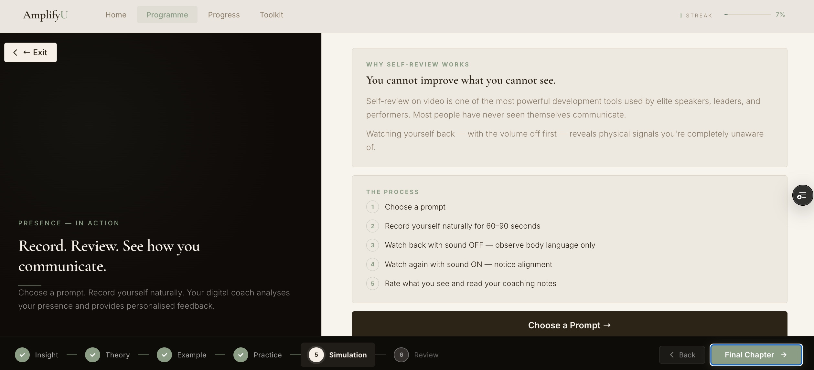
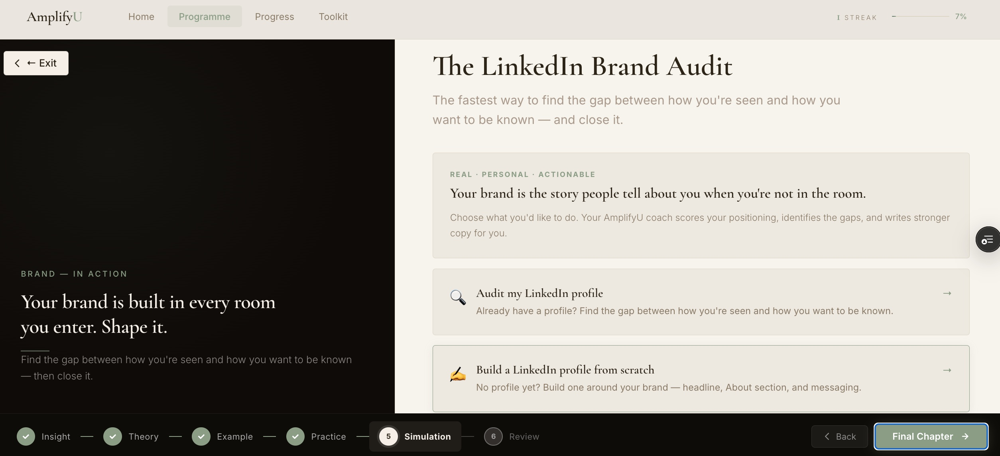

Features
Fourteen concise sessions. Fifteen minutes a day. A lifetime of clearer thinking, stronger communication, and greater influence.
The gap is real
Not in school. Not in most companies. Most professionals spend years watching others advance — people who aren't smarter, but who communicate with more precision, presence, and purpose. AmplifyU closes that gap. Deliberately. In fifteen minutes a day.
AI Conversation Prep · Day 6
Most people prepare what they want to say. Elite communicators prepare for what they'll be asked.
Tell your AmplifyU Coach your industry, role, who you're meeting, and what it's about. It builds your conversation profile — stakeholder psychology, likely concerns, risk level — then generates the 10 hardest questions you'll face.

"Walk into every conversation knowing what's coming — and exactly how to respond."
Story Architect · Day 4
Describe your subject, audience, and the feeling you want to create. The Architect handles the rest.
AmplifyU's Story Architect takes one sentence from you and builds a complete story world: a seven-beat Pixar arc, a narrative that lands outcomes, and a core message you can walk into any room with. Pitches, reviews, interviews, leadership talks — every story needs the same architecture.

"Nothing like this exists anywhere else. The Story Architect doesn't just help you tell stories — it teaches you the architecture of stories that land outcomes."
Voice Analysis · Day 2
Your voice is a piano with 88 keys. Most professionals spend their whole careers playing the same five.
Choose a prompt. Speak naturally for 60–90 seconds. Your AI vocal coach analyses pace, pitch, tone, pauses, energy, range, and presence — then gives you a scored voice profile, pinpoints your biggest opportunity, and tells you exactly what to focus on next round.

"This recording becomes your vocal baseline — not a test, expert coaching."
Presence & Composure · Day 11
You cannot improve what you cannot see. Most people have never watched themselves communicate.
Choose a prompt. Record yourself naturally for 60–90 seconds. Watch back with the sound off first — observe only your body language. Watch again with sound on. Your coach provides personalised feedback on non-verbal signals, composure under pressure, and executive presence.

"Watching yourself back — with the volume off first — reveals physical signals you're completely unaware of."
LinkedIn Brand Audit · Day 11
Your brand is the story people tell about you when you're not in the room. Shape it deliberately.
Paste your LinkedIn headline, About section, or professional bio. Your AmplifyU coach analyses your positioning against your brand intent — identifying what's working, what's missing, and what's actively undermining you — then rewrites stronger copy for you to use today.

"Your LinkedIn profile is often the first thing a decision-maker sees. Make it work as hard as you do."
Your Communication Operating System
Precision tools available any time — inside the programme or independently. Built for real workplace moments, not theoretical practice.
"When you communicate well, you work faster,
influence more, and come home with
something left to give."
Jenni · Founder, AmplifyU
A Private Coaching Programme
14 sessions. Fourteen AI simulations. Fifteen minutes a day. The unwritten skills behind every career that matters.